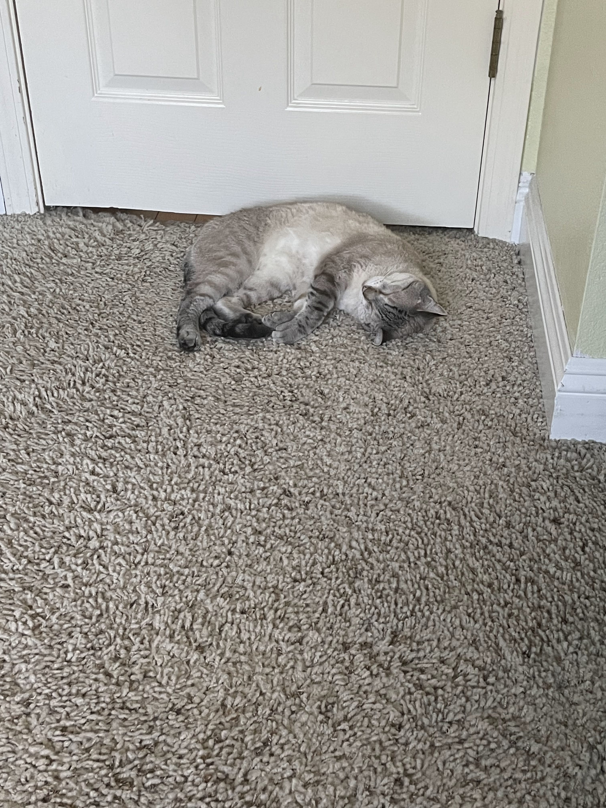

The image that I have received from Aidan Fontano is a photo of her childhood cat Aris. This is an adorable cat that is laying on the carpet of her childhood room. The most interesting aspect of this image is the cat itself, he is the main subject in this photo. The most obvious part of the image is that the cat is sleeping on the carpet. While the most mysterious part is if this is something the cat did often. The name and location was information that Aidan had told me about, emphasizing why she liked this photograph, such as the location and cat’s name. I would recommend cropping the image so we see more of the cat and less of the carpet. Additionally I would add a filter that either makes the cat stand out more or blend in more with the carpet.

Aidan Fontano, 2025
The image I am most excited to use is this variegated Monstera Albo. Most people wouldn’t know how “rare” of a plant this is and how much it can sell for. One may also know immediately why the monster has such a marbled variegation. This image relates to my topic of plants and how expressive they are. I am very fond of plants and have a houseplant collection. I wanted to tie this into an emotional approach that is fun and unique by giving the plants personality. I would update the images to have the main subject be cut out, making it easier to spot and click on a website. I want it to be interactive.
Jashan Singh, 2025
Visual Thinking Strategies
The article 10 Intriguing Photographs to Teach Close Reading and Visual Thinking Skills emphasizes how powerful images are able to tell a strong story and leave a lasting impression on the viewer. The author emphasized that having a photo that makes the viewer pause and questing will draw them in closer to the overall page. I believe that it’s all in the small details, that’s what really can get a viewer thinking. Photographs that are able to spark a conversation or debate can encourage more involvement and interest. I agree with the author, most people are visual so we have to cater to their minds. Images are usually noticed first on the page. I enjoy including images in my work, especially editing them specifically to fit the theme of the site.
A website that does a great job in using photos to spark curiosity and keep the viewer interested is YODEZEEN. This interactive website takes the user on a visual journey through their project, showcasing architecture and project details. As the user scrolls through the page, they are unveiling more images that tell the story for the viewer.
A modal is described to be an element that lays over the main part of the window. The user must interact with it in order to reveal the elements underneath. This can be used to grab the user’s attention, show more information, and show extra information that may not be directly related to the main idea of the page. It’s also important to remember to have a way to exit the modal with a close button of some sort so the user doesn’t have to refresh the page. This can be done by adding a close button.
Having a descriptive title also allows easier usability for the user, they are able to understand what the purpose of the modal is, especially since they haven’t left the page. The main page can be darkened to further highlight to the user that they can’t interact with the parent page until they close the modal.
Best Form Practices
The article Best Practices for Form Design, emphasized how significant of a difference certain changes can make in a website. One of the practices that I agree with is differentiating between the optional and required fields. When this is made easily understandable in a website, it allows the user to move through the form efficiently. Although it is important to not overuse the asterisk, if every question is required then that must be made clear early on.
Another practice that I got to learn more about is when it’s appropriate to use drop down menus. If there are 5 items or less, then one should use a button or selection boxes instead. It’s better to keep the drop down menus for fields that have a lot of options, but only one answer needs to be selected. It should also be stacked vertically so it’s easier for the user to scan and read through the form. It’s essential that the user stays in the flow when completing forms, otherwise there is a higher chance of them leaving it incomplete due to complications.
One of the most important practices is accessibility. As designers, we need our work to be available to everyone in order to get our information delivered correctly. By making the page easier to navigate and read, we are able to expand our audience. Making sure the page has proper contrast, readability, and symbols provide an opportunity for more people to access a page.
A site that comes to mind that displays these practices is Schedule Builder for UC Davis. The website allows you to search for classes and register through a click of a button. If something is done incorrectly or not filled out, there will be a warning message at the top. One can also scroll through the schedule options and choose to drop or add a class from a drop down menu.